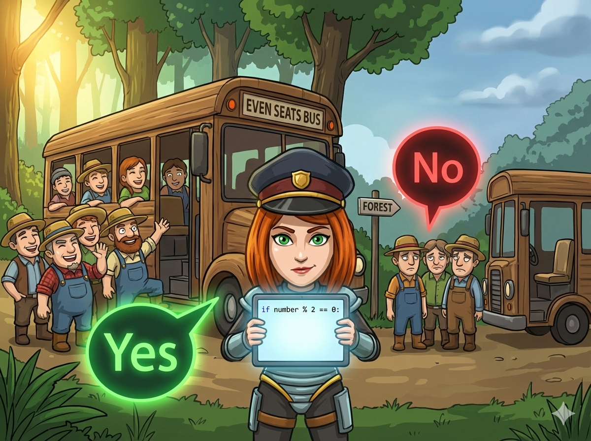

清晨，勤劳的农民伯伯们在村口集合，准备去森林采集草药 🌿。 村里有很多不同的大巴车：2座的、4座的、6座的... 发现规律了吗？车的座位数都是偶数！
为了不浪费时间，如果农民的人数是 偶数 (能被2整除)，大家就能刚好坐满，马上出发 (Yes)。 如果人数是 奇数，就会多出空位或者有人没座，只能等待 (No)。
👉 任务： 编写程序，读入农民数量，判断是不是偶数！
如何告诉计算机什么是“偶数”呢？我们要用到一个超级好用的运算符：取余 (%)。
能被 2 整除
a % 2 == 0
除以2，余数是0
不能被 2 整除
a % 2 != 0
除以2，余数是1
帮农民伯伯算算能不能出发吧！
#include <iostream> using namespace std; int main() { // 1️⃣ 声明变量 a (人数) int a; // 2️⃣ 输入人数 cin >> a; // 3️⃣ 判断奇偶 // a % 2 == 0 意思是：a 除以 2 余数为 0 if (a % 2 == 0) { cout << "Yes"; // 偶数，可以出发 } else { cout << "No"; // 奇数，不能出发 } return 0; }
# 1️⃣ 输入：读取人数，转为整数存入 a a = int(input()) # 2️⃣ 判断奇偶 # a % 2 == 0 意思是：a 除以 2 余数为 0 if a % 2 == 0: print("Yes") # 偶数 else: print("No") # 奇数
⭐ 秘诀： 凡是判断奇数偶数，永远记得找 % 2 帮忙！